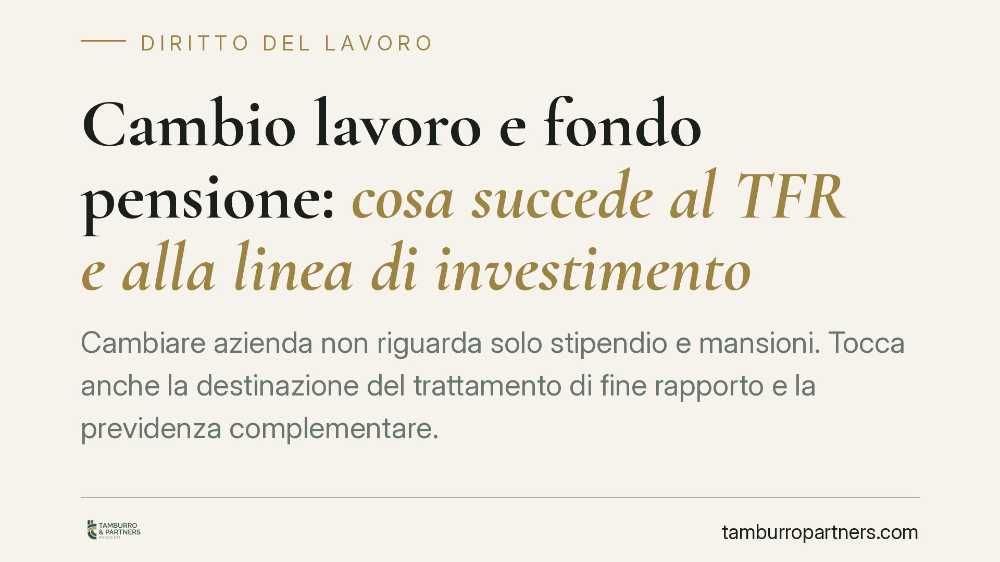

Cambio lavoro e fondo pensione: cosa succede al TFR e alla linea di investimento
Cambiare azienda non riguarda solo stipendio e mansioni. Tocca anche la destinazione del trattamento di fine rapporto e la previdenza complementare. In assenza di una scelta esplicita, il TFR può essere conferito tacitamente al fondo previsto dal contratto collettivo. Capire come funziona il meccanismo evita di lasciare che siano regole di default a decidere per il lavoratore.

Il contesto
Quando un lavoratore dipendente cambia datore di lavoro, si riaprono gli obblighi legati alla destinazione del trattamento di fine rapporto (TFR). La scelta effettuata presso il precedente datore non si trasferisce automaticamente in ogni suo aspetto: alcuni profili vanno riconfermati o ridefiniti.
Il tema è tecnico e spesso trascurato. Eppure la modalità con cui il TFR viene destinato incide, nel tempo, sulla consistenza della posizione previdenziale integrativa.
*Nota di metodo: alla data di redazione non risulta a chi scrive una legge n. 199/2025 in materia di adesione automatica alla previdenza complementare con contenuto verificabile. Non trattandosi di fonte confermata, l'analisi che segue si fonda sulla disciplina vigente. Eventuali novità normative andranno verificate presso le fonti ufficiali prima di assumere decisioni.*
Inquadramento normativo
La materia è regolata dal D.Lgs. 5 dicembre 2005, n. 252, sotto la vigilanza della COVIP (Commissione di vigilanza sui fondi pensione).
L'art. 8 disciplina il cosiddetto *conferimento tacito*. Il lavoratore ha sei mesi dall'inizio del rapporto per esprimersi sulla destinazione del TFR. Se tace, il TFR maturando viene conferito alla forma pensionistica collettiva prevista dal contratto collettivo o dall'accordo aziendale applicabile. In mancanza, opera il fondo residuale istituito presso l'INPS.
Un punto va chiarito, perché fonte di equivoci: il TFR conferito tacitamente confluisce nel comparto a garanzia del fondo, cioè una linea di investimento prudente che assicura la restituzione del capitale versato o un rendimento minimo. Non confluisce in una "linea life cycle" salvo che il regolamento del fondo lo preveda espressamente come opzione di default.
La linea life cycle è un modello di gestione offerto solo da alcuni fondi: l'esposizione azionaria è più elevata nelle età giovani e decresce progressivamente con l'avvicinarsi della pensione, spostando gradualmente il capitale su strumenti meno volatili. È una scelta, non un automatismo.
L'art. 14 regola la portabilità: il lavoratore può trasferire la posizione già maturata a un'altra forma pensionistica, nel rispetto dei requisiti di permanenza minima previsti.
Tre scenari da distinguere
Le conseguenze del cambio di lavoro dipendono dalla situazione di partenza.
a) Lavoratore senza posizione previdenziale che tace. Scatta l'art. 8: il TFR maturando presso il nuovo datore va al fondo collettivo di riferimento, nel comparto a garanzia. La scelta di investimento non viene fatta dal lavoratore, ma dalla regola di default.
b) Lavoratore con posizione già attiva. La posizione pregressa non si azzera. Il lavoratore può mantenerla, oppure trasferirla al fondo del nuovo datore mediante portabilità (art. 14). Sono due decisioni distinte: la sorte del capitale già accumulato e la destinazione dei versamenti futuri.
c) Nuovi versamenti presso il fondo del nuovo datore. Anche chi aderisce a un nuovo fondo deve scegliere il comparto. In assenza di indicazione, torna a operare il default: comparto a garanzia, salvo diversa previsione regolamentare.
Implicazioni pratiche
Il rischio concreto è duplice. Da un lato, lasciare che il silenzio determini una destinazione non voluta del TFR. Dall'altro, dimenticare la posizione pregressa, con contributi frammentati tra più fondi e comparti non coerenti con l'orizzonte temporale del lavoratore.
Un comparto a garanzia offre stabilità ma rendimenti tendenzialmente contenuti: per un lavoratore giovane, distante dalla pensione, può non essere la linea più efficiente. La valutazione, tuttavia, è personale e dipende da età, propensione al rischio e obiettivi.
Cosa fare in concreto
- Compila esplicitamente il modulo di destinazione del TFR all'avvio del nuovo rapporto, senza affidarti al silenzio-assenso semestrale.
- Verifica il comparto di investimento assegnato: controlla se sei finito nella linea a garanzia e valuta se è coerente con la tua età e i tuoi obiettivi.
- Ricostruisci la tua posizione pregressa e decidi consapevolmente se mantenerla nel vecchio fondo o trasferirla per portabilità (art. 14).
- Consulta la nota informativa del nuovo fondo e verifica se offre una gestione life cycle o comparti diversificati adatti al tuo profilo.
- Conserva la documentazione delle scelte effettuate e verifica gli estratti conto periodici trasmessi dal fondo.
Il momento giusto per verificare è ora, prima che scadano i termini di scelta e siano le regole di default a decidere.
Disclaimer
Contributo informativo a cura di Tamburro & Partners - Avv. Giuseppe Tamburro. Non costituisce parere legale.
Ogni storia di lavoro ha i suoi tempi.
Se gestisci HR e vuoi un confronto su contenzioso, ispezioni o licenziamenti, scrivi allo studio. Ti rispondiamo entro un giorno lavorativo.